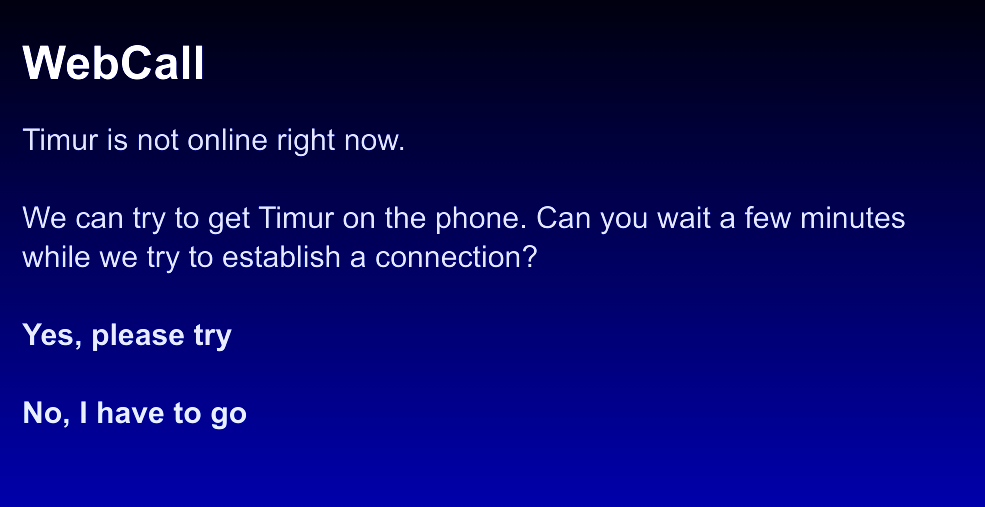
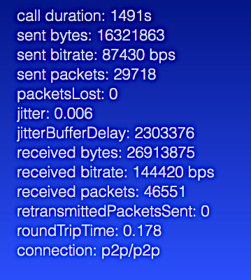
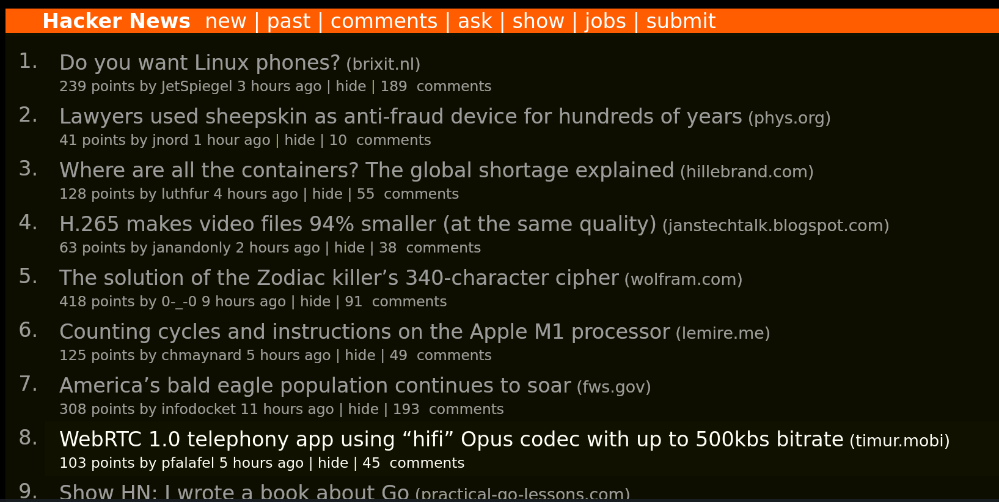

WebCall News
June 2021
New: One-Click Telephony for Websites
May 2021
New: Offline Notifications for Callees
April 2021
New: Post-Call Stats
March 2021
New: Digital Answering MachineHN: WebRTC 1.0 telephony app using “hifi” Opus codec with up to 500kbs bitrate

Main Page